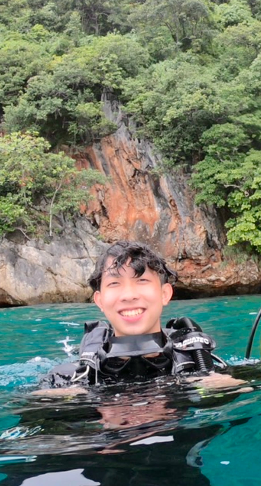
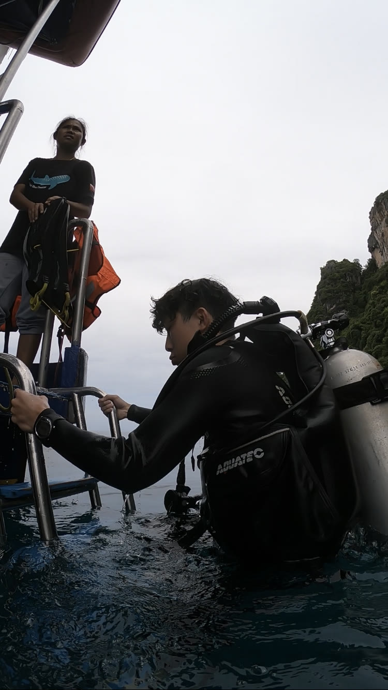
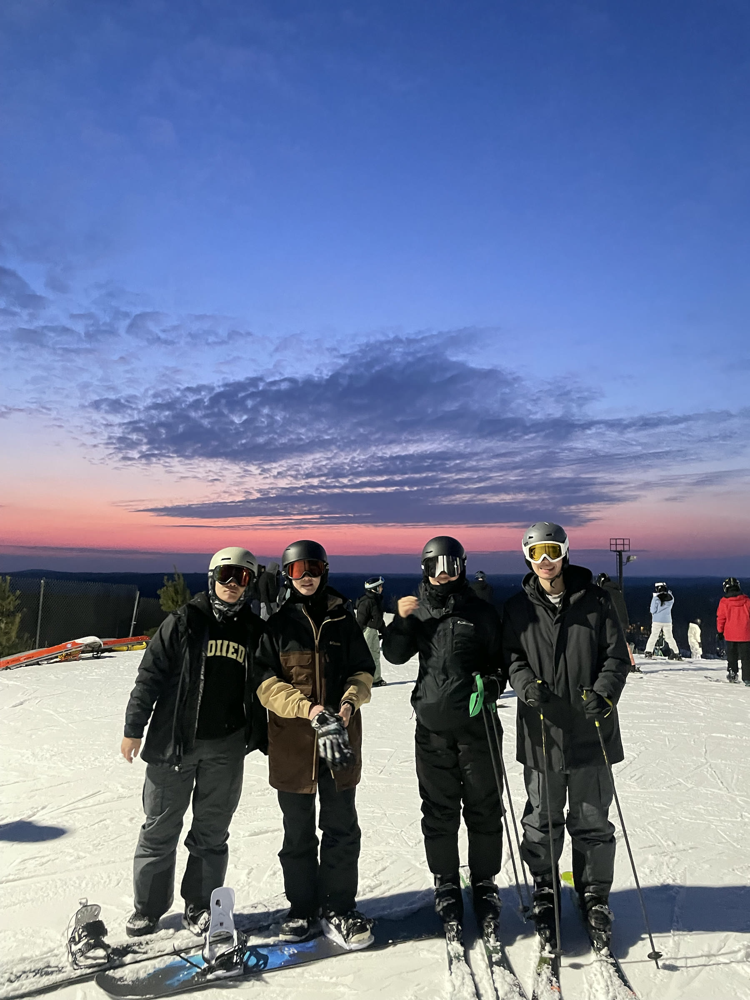
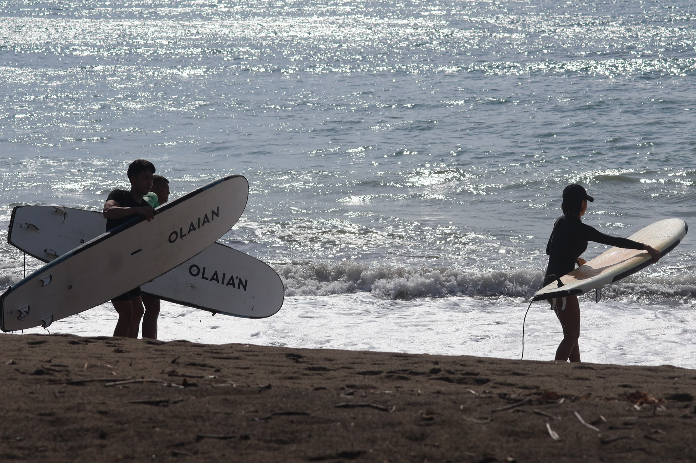
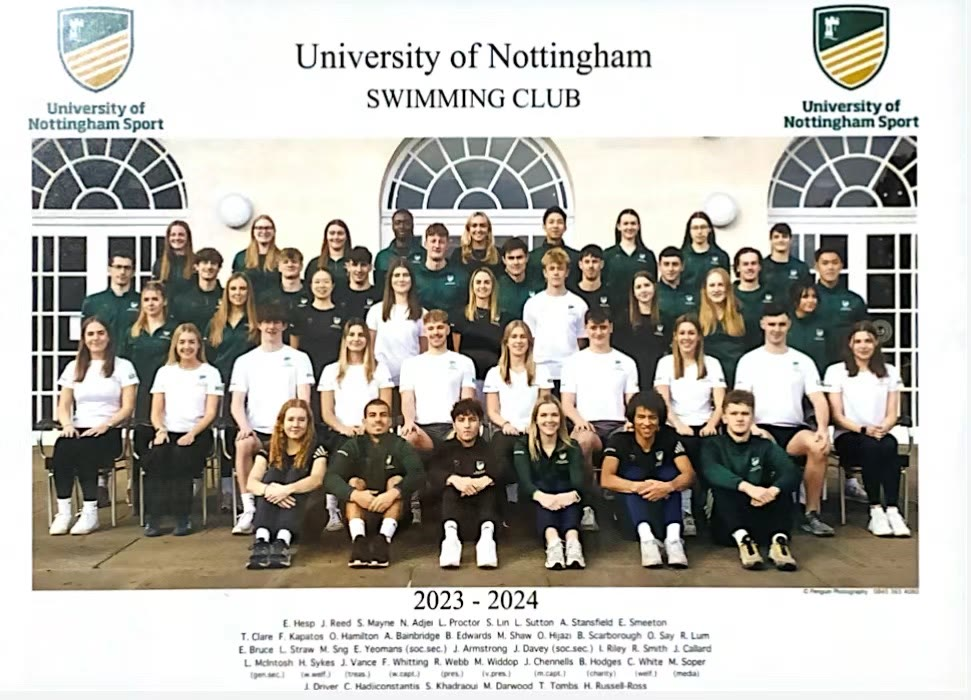
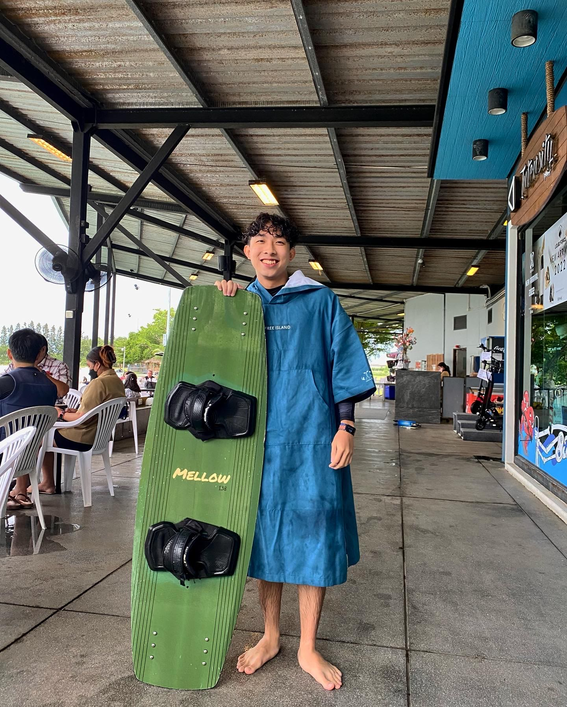

Beyond engineering
Tzu-Hsiang (Sean) Lin
Outside research and engineering, I enjoy learning through sport, travel, and hands-on hobbies. These activities help me stay curious, disciplined, and open to new experiences.


Scuba Diving
Scuba diving gives me a different way to explore the natural world. It rewards preparation, calm decision-making, and close attention to the environment and the people around me.

Skiing
Skiing challenges me to stay focused, adapt quickly, and keep improving through practice. I enjoy the combination of speed, technique, and time outdoors.

Surfing
I enjoy surfing for its combination of balance, patience, and constant adaptation. Every session is shaped by the water and weather, making progress both physical and mental.

Swimming
I was a member of the University of Nottingham Swimming Club team. Swimming has helped me develop consistency, endurance, and an appreciation for steady improvement while being part of a wider sporting community.

Wakeboarding
Wakeboarding is an energetic challenge that combines coordination, confidence, and persistence. I enjoy the process of refining technique and becoming more comfortable on the water.
Other interests
- Golf
- Tennis
- Cooking
- Guitar
- Pour-over coffee